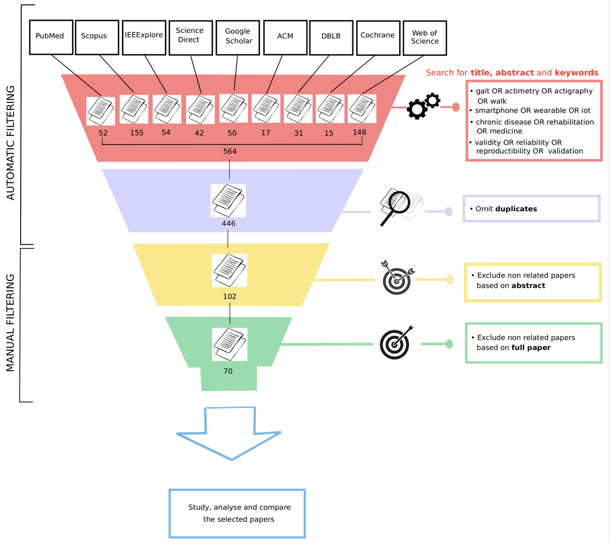

The Contribution of Machine Learning in the Validation of Commercial Wearable Sensors for Gait Monitoring in Patients
This project reviews how commercial wearable sensors are validated for patient gait monitoring, and how machine learning contributes to this validation. It focuses on studies published between 2010 and 2020 that use wearable or mobile devices to monitor gait in clinical and rehabilitation contexts.

Overview
Gait, balance and coordination are important indicators in the monitoring of chronic disease and rehabilitation. Traditional clinical assessments, such as walk tests, provide useful information but remain limited in duration, context and ecological validity.
Commercial wearable sensors and smartphones can collect gait-related data in daily life over longer periods of time. This creates opportunities for remote patient monitoring, but also raises a central methodological question: how can these devices and their derived indicators be rigorously validated?
Method
We conducted a systematic review following the PRISMA-ScR checklist. The search covered ten databases, including PubMed, Scopus, IEEE Xplore, ScienceDirect, Google Scholar, ACM, DBLP, Cochrane and Web of Science.
The review focused on peer-reviewed articles published between 2010 and 2020. From 564 records, 70 studies were selected after duplicate removal, title and abstract screening, and full-paper eligibility assessment.
Findings
The review shows that validation of commercial wearable sensors for gait monitoring has grown steadily since 2010, especially after 2017. Most selected studies used accelerometers, either alone or embedded in a device, and many also used gyroscopes.
All included studies reported some form of ground truth for validation. The most common approaches relied on traditional statistical methods, while machine learning-based validation approaches represented a smaller but increasingly visible part of the literature.
Machine learning appears particularly relevant when validation involves complex, multidimensional data from one or more sensors, nonlinear relationships, or higher-level classification tasks related to patient condition and disease progression.
Contribution
The project clarifies how commercial wearable sensors are evaluated in patient gait monitoring and highlights the methodological challenges of moving from laboratory protocols to free-living conditions.
It also shows that machine learning should be considered as an important direction for future validation work, provided that datasets are sufficiently numerous, annotated and representative of real patient conditions.